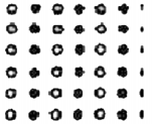
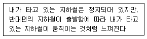
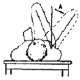
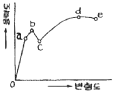
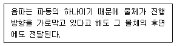
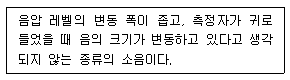

실내건축기사(구) (2008-09-07 기출문제)
1과목: 실내디자인론
1. 디자인 요소 중 점에 대한 설명으로 틀린 것은?
- 점의 크기에 대한 인식은 점을 둘러싸고 있는 주변 구조에 따라 상대적으로 지각된다.
- 점은 선의 양 끝, 교차, 굴절, 면과 선의 교차에서 나타난다.
- 하나의 점은 관찰자의 시선을 화면 안에 특정한 위치로 이끈다.
- 물리적으로 크기가 같은 점은 색에 관계없이 동일하게 인식된다.
(정답률: 86%)

2. 다음 중 실내디자인에 관한 용어 설명이 옳지 않은 것은?
- 소파베드(sofa bed) - 침대겸용 가능한 가구
- 다운라이트(down light) - 천장 매입형 조명
- 키친네트(kitchenet) - 부엌의 소형 주방세트
- 슈퍼그래픽(super graphic) - 카페트면에 사용하는 그래픽
(정답률: 72%)
3. 다음의 실내디자인 요소에 대한 설명 중 틀린 것은?
- 바닥은 고저차를 통해 공간의 영역을 조정할 수 있다.
- 벽은 공간을 구획하는 절대적 요소이며, 높이 1500mm인 벽은 상징적 경계를 나타낸다.
- 천장을 낮추면 영역의 구분이 가능하며 친근하고 아늑한 공간을 만들 수 있다.
- 천장은 바닥면과 함께 공간을 형성하는 수평적 요소이다.
(정답률: 73%)
4. 상점의 동선계획에 대한 설명 중 옳지 않은 것은?
- 동선의 흐름은 공간적, 물리적인 흐름뿐만이 아니라 시각적인 흐름도 원활하도록 한다.
- 고객 동선은 흐름의 연속성이 상징적, 지각적으로 분할되지 않는 수평적 바닥이 되도록 한다.
- 고객의 동선은 고객의 편의를 위해 가능한 한 짧게 한다.
- 고객을 위한 통로 폭은 최소 900mm 이상으로 한다.
(정답률: 95%)
5. 다음 중 공간의 레이아웃(Lay out)에 설명으로 옳은 것은?
- 공간별 동선계획을 의미한다.
- 공간별 재료 마감 계획을 의미한다.
- 사용자(User)의 요구조건을 의미한다.
- 공간을 구성하는 기본요소에 프로그램에 따른 구성요소를 배치하는 것을 의미한다.
(정답률: 73%)
6. 다음의 실내디자인의 영역에 대한 설명 중 옳은 것은?
- 실내디자인의 영역은 건축물의 실내공간을 주 대상으로 하며, 도시환경이나 가로공간에서도 발견된다.
- 실내디자인은 건축공간의 심리적 문제해결이나 독자적인 표현을 대상으로 하며 건축물의 매스나 형태의 디자인을 주 영역으로 한다.
- 실내디자인은 인간생활에 적합한 환경을 구성함에 있어 건축공간의 기능적 측면은 건축의 영역에 해당되므로 이를 고려할 필요는 없다.
- 실내디자인은 인간의 물리적 조건, 환경적 조건, 기능적 조건을 충족함을 목표로 하며, 정서적 조건은 전적으로 의뢰인의 몫이다.
(정답률: 75%)
7. 주거공간을 개인공간, 사회공간, 노동공간, 보건∙위생공간 등으로 구분할 때, 다음 중 사회공간에 속하는 것은?
- 현관, 욕실
- 침실, 욕실
- 서재, 침실
- 거실, 식당
(정답률: 91%)
8. 아트리움(Atrium)에 대한 설명으로 가장 알맞은 것은?
- 자연광을 실내에 유입시켜 실내속에 옥외공간의 분위기를 조성하여 휴식공간으로 제공한다.
- 오피스 작업을 사람의 흐름과 정보의 흐름을 매체로 효율적인 네트워크가 되도록 배치하는 배치방법이다.
- 오피스에서 업무를 수행하는 사람이 업무수행을 효율적으로 하기 위하여 필요한 기기, 가구, 집기를 포함하는 최소 단위의 기능공간이다.
- 집회기능을 해결하기 위한 개방된 실내공간이다.
(정답률: 86%)
9. 우리나라의 한옥에 대한 설명 중 옳지 않은 것은?
- 기단을 높여 통풍이 잘 되도록 하여 땅의 습기를 제거하였다.
- 창과 문의 좌식생활에 따른 인체치수를 고려하여 만들어졌다.
- 미닫이문, 들문 등의 사용으로 내부공간의 융통성을 도모하였다.
- 남부지방의 경우 겨울철 난방을 고려하여 기밀하고 폐쇄적인 공간구성으로 계획되었다.
(정답률: 86%)
10. 다음 중 재료의 질감에 대한 설명으로 옳은 것은?
- 질감은 어떤 물체가 갖고 있는 표면적 특징을 말하며 촉각적인 것과 시각적인 것이 있다.
- 시각적으로 매끄러운 질감은 만져보아도 매끄러워야 한다.
- 구조적 질감은 기본구조에 무엇인가를 덧붙인 것이다.
- 빛을 많이 반사시키는 재질은 그 재질의 색을 흐려보이게 한다.
(정답률: 92%)
11. 다음 중 선이 주는 조형효과가 옳게 연결된 것은?
- 수직선 – 무한, 확대, 안정, 평화
- 수평선 – 위엄, 단정, 엄숙함
- 사선 – 약동감, 생동감
- 곡선 – 운동감, 속도감, 위험, 긴장
(정답률: 72%)
12. 이질의 각 구성요소들이 전체로서 동일한 이미지를 갖게 하는 것으로, 변화와 함께 모든 조형에 대한미의 근원이 되는 실내디자인의 구성원리는?
- 대비
- 조화
- 리듬
- 통일
(정답률: 45%)
13. 실내디자인 프로젝트의 성격에 대한 설명 중 틀린 것은?
- 건축 설계와 병행되는 경우는 건축설계자와 협조가 필요하다.
- 개보수인 경우는 현장의 정확한 실측과 조사가 필요하다.
- 대수선 허가가 필요한 주요 구조부의 변경은 어떠한 경우에도 할 수 없다.
- 기존 공간의 개보수는 물론 신축공간의 디자인도 실내디자인에 포함된다.
(정답률: 84%)
14. 시각적인 안정감과 강약이 규칙적으로 연속될 때 나타나는 리듬(rhythm)감을 표현하는 방법이 아닌 것은?
- 반복(repetition)
- 점층(gradation)
- 균형(balance)
- 방사(radiation)
(정답률: 56%)
15. 다음 중 유기적(organic) 디자인의 포괄적인 의미로 가장 알맞은 것은?
- 나무, 눈의 결정체 등 자연생명체의 형태를 적용하는 디자인
- 자연 생명체의 원리와 질서를 적용하는 디자인
- 천연재료를 사용하는 디자인
- 자연형태에 가까운 곡선 형태를 많이 사용하는 디자인
(정답률: 56%)
16. 디자인 단계에서 사용되는 아이디어 창출기법에 대한 설명으로 옳지 않은 것은?
- 롤 플레잉(Role Playing)은 디자이너가 사전 연습 없이 의뢰자나 사용자의 입장을 표현하여 아이디어를 얻는 방식이다.
- 브레인 스토밍(Brain Storming)은 일정한 형식에 따라 하나의 아이디어를 만들어내는 작업과정이다.
- 버즈세션(Buzz Session)은 신속한 그룹활동으로 명확한 소재를 논의하고 디자인 전략의 대한을 제안한다.
- 창조적 문제해법(Synect ics)은 익숙하지 않은 모양을 익숙하게 하고 익숙한 모양을 어색하게 하는 그룹활동이다.
(정답률: 46%)
17. 상점건축에서 쇼윈도우, 출입구 및 홀의 입구부분을 포함한 평면적인 구성요소와 아케이드, 광고판, 사인, 외부장치를 포함한 입체적인 구성요소의 총체를 의미하는 것은?
- P.O.P(point of purchase)
- 쇼케이스(show case)
- 스테이지(stage)
- 파사드(facade)
(정답률: 85%)
18. 다음 중 시스템 디자인(system design)에 관한 설명으로 옳은 것은?
- 시스템 가구는 형태적 측면에서 고려된 것으로 대량 생산과는 관계가 없다.
- 서비스 코어 시스템(service core system)은 가구나 조명등 실내공간을 보조하는 시스템을 말하는 것이다.
- 디자인에서 시스템 적용은 모듈에 의한 표준화, 조립화와 연결된다.
- 시스템 키친(system kitchen)은 주방용기인 그릇등의 디자인을 통합하는 작업이다.
(정답률: 83%)
19. 다음 중 천창(天窓)을 설계에 사용했을 때의 장점으로 옳지 않은 것은?
- 같은 면적의 측창보다 광량이 적어 조도분포가 균일하다.
- 건축계획의 자유도가 증가한다.
- 벽면이용을 개구부에 상관없이 더욱 다양하게 활용할 수 있다.
- 밀집된 건물에 둘러싸여 있어도 일정량의 채광을 확보할 수 있다.
(정답률: 82%)
20. 다음 중 마르셀 브로이어(Marcel Breuer)가 디자인한 의자는?
- 바르셀로나 의자(Barcelona chair)
- 체스카 의자(Cesca chair)
- 투겐하트 의자(Tugendhat chair)
- 흔들 의자(rocking chair)
(정답률: 72%)
2과목: 색채학
21. 색채에 있어서 수반 감정은 색채가 인간에게 미치는 기본적인 효과를 말한다. 색이 수반하는 감정에 관한 설명으로 가장 거리가 먼 것은?
- 난색계의 채도가 높은 색은 흥분을 유발시킨다.
- 장파장 쪽의 색이 따뜻하게 느껴진다.
- 저명도의 색은 무겁게 느껴진다.
- 개인별로 느낌의 차이가 대단히 많다.
(정답률: 80%)
22. 먼셀색체계의 색입체에서 등색상의 명도, 채도와의 상호 관계를 알기 휘한 것은?
- 수평 단면도
- 수직 단면도
- 등명도 횡단면도
- 무채색축
(정답률: 54%)
23. 색의 혼합에 관한 내용으로 틀린 것은?
- 색료 혼합의 3원색은 자주(magenta), 노랑(yellow), 파랑(cyan)이다.
- 색광 혼합의 2차 색은 색료 혼합의 3원색이 된다.
- 색료 혼합은 혼합하면 할수록 명도와 채도가 낮아진다.
- 색광 혼합은 혼합하면 할수록 명도와 채도가 높아진다.
(정답률: 41%)
24. 색채판별능력, 색채조정능력을 요구하며 색채계획에서 가장 먼저 진행해야 할 단계는?
- 색채환경분석
- 색채심리분석
- 색채전달계획
- 디자인에 적용
(정답률: 85%)
25. 무대 디자인과 디스플레이에 있어, 색광에 의하여한정된 공간을 여러 가지로 보여 질 수 있게 변화가 가능하다. 이처럼 조명에 의하여 물체의 색의 결정되는 광원의 성질을 뜻하는 것은?
- 조건등색
- 연색성
- 색각이상
- 발광성
(정답률: 60%)
26. 다은 중 색의 명시성이 가장 높은 것은?
- 백색 바탕에 황색 글씨
- 황색 바탕에 흑색 글씨
- 흑색 바탕에 백색 글씨
- 적색 바탕에 청록색 글씨
(정답률: 44%)
27. 색채의 시간성과 속도감에 대한 설명 중 옳은 것은?
- 삼속성 중 명도가 주로 큰 영향을 미친다.
- 장파장의 색은 시간이 길게 느껴진다.
- 단파장의 색은 속도감이 빠르다.
- 저명도의 색은 속도가 빠르게 느껴진다.
(정답률: 69%)
28. 오스트발트의 색상환에서 대응색인 4원색이 아닌 것은?
- yellow
- ultramarine blue
- red
- turquoise
(정답률: 50%)
29. 색채 조절의 효과로 가장 거리가 먼 것은?
- 마음의 안정을 찾는다.
- 일에 능률을 향상시킨다.
- 눈과 정신의 피로를 회복시킨다.
- 바람직한 색채 운영 방법을 찾는다.
(정답률: 87%)
30. 배색된 색채들이 서로 공통되는 상태와 속성을 가질 때의 조화 원리는?
- 질서의 원리
- 비모호성의 원리
- 유사의 원리
- 대비의 원리
(정답률: 79%)
31. 다음 중 일반색명에 관한 내용으로 옳은 것은?
- 동물, 식물 등에서 따온 색명
- 광물이나 원료이름에서 따온 색명
- 자연이나 자연현상에서 따온 색명
- 색상, 명도, 채도를 나타내는 수식어를 붙인 색명
(정답률: 74%)
32. 다음 먼셀 기호 중 신록이나 목장, 신성한 기운을 상징하기에 가장 적절한 색은?
- 10 R 6/2
- 10 G 2/3
- 5 GY 7/6
- 10 B 4/3
(정답률: 69%)
33. 문·스펜서의 색채조화론에 해당하지 않는 것은?
- 유사성의 조화
- 동일성의 조화
- 대비의 조화
- 명도의 조화
(정답률: 61%)
34. 영·헬름홀츠이 3원색설에 따라 녹색과 빨강의 시세포가 동시에 흥분하면 어떤 색의 색각이 생기는가?
- 시안(cyan)
- 마젠타(magenta)
- 검정(black)
- 노랑(yellow)
(정답률: 64%)
35. 오스트발트의 색채조화론에 관한 설명으로 틀린 것은?
- 무채색의 여러 단계 속에서 같은 간격으로 선택된 배색은 조화를 이루게 된다.
- 색입체를 수평으로 자르면 백색량, 흑색량, 순색량이 같은 28개의 등가색환이 된다.
- 윤성조화(輪星調和)란 다색조화를 설명하는 것이며, 37개의 조화색을 얻어낼 수 있다.
- 배색의 아름다움을 계산으로 구하고 수치적으로 미도(美度)를 비교할 수 있다.
(정답률: 45%)
36. 다음 중 순색의 채도가 가장 높은 색상은?
- Red
- Green
- Blue
- Purple
(정답률: 67%)
37. 실제의 위치보다 가깝게 있는 것처럼 보이는 색을 뜻하는 것은?
- 후퇴색
- 수축색
- 무채색
- 진출색
(정답률: 73%)
38. 유리병 속의 액체나 얼음덩어리처럼 공간의 투명한 부피를 느끼는 색은?
- 투명면색
- 투과색
- 공간색
- 물체색
(정답률: 71%)
39. 프르킨예 현상으로 옳은 것은?
- 밝은 곳에서 어두운 곳으로 갈수록 장파장의 감도가 높다.
- 밝은 곳에서 어두운 곳으로 갈수록 단파장의 감도가 높다.
- 밝은 곳에서 어두운 곳으로 갈수록 단파장의 색이 먼저 사라진다.
- 어두운 곳에서 밝은 곳으로 갈수록 장파장과 단파장의 감도가 떨어진다.
(정답률: 57%)
40. 사무실에서 사무용기기의 권장 먼셀명도로 가장적합한 것은?
- 9 이상
- 8
- 5.5~7
- 3~4
(정답률: 62%)
3과목: 인간공학
41. 짐을 나르는 방법에 따른 에너지(산소소비량)가 가장 높은 것은?
- 머리에 이고 나른다.
- 배낭형태로 나른다.
- 양손에 들고 나른다.
- 등과 가슴을 이용하여 나른다.
(정답률: 90%)
42. 인간이 한 자극 차원 내의 자극을 절대적으로 식별할 수 있는 능력은 정보량으로 몇 bit정도인가?
- 0.5~1
- 2~3
- 4~5
- 6~7
(정답률: 50%)
43. 다음 중 시력 1.0에 대한 설명으로 가장 적절한 것은?
- 인간의 평균적인 시력을 말한다.
- 최소 시각이 1분(分)인 시력을 말한다.
- 수정체의 굴절력이 10 디옵터인 시력을 말한다.
- 시력 측정표를 안경 없이 읽을 수 있는 시력을 말한다.
(정답률: 75%)
44. 간판의 바탕색이 80%의 반사도를 가지며, 글씨가 10%의 반사도를 가질 때 대비(contrast)는 약 몇%인가?
- 65
- 70
- 85
- 88
(정답률: 45%)
45. “소음작업”은 1일 8시간 작업을 기준으로 얼마 이상의 소음이 발생하는 작업을 말하는가?
- 80dB
- 85dB
- 90dB
- 95dB
(정답률: 59%)
46. 다음 중 1촉광의 점광원으로부터 1m떨어진 곡면에 비추는 광의 밀도를 나타내는 단위는?
- foot-candle
- lux
- lumen
- Lambert
(정답률: 74%)
47. 인간-기계의 통합체계 중 반자동 체계에 해당하는 것은?
- 수동 체계
- 기계화 체계
- 인력이용 체계
- 정보 체계
(정답률: 45%)
48. 다음 중 정보의 입력에 있어 청각장치보다 시각장치를 이용하는 것이 더 유리한 경우는?
- 정보의 내용이 복잡한 경우
- 수신자가 자주 이동하는 경우
- 정보가 다음에 재 참조되지 않는 경우
- 정보의 내용이 즉각적인 행동을 요구하는 경우
(정답률: 67%)
49. [그림]과 같은 시각요소에 해당되는 게슈탈트(Gestalt)의 법칙에 해당되지 않는 것은?

- 단순성
- 모양성
- 유사성
- 폐쇄성
(정답률: 36%)
50. 다음 중 암순응(dark adaptation)이 되어 있는 눈에 가장 둔감한 색상은?
- 백색
- 보라색
- 초록색
- 분홍색
(정답률: 75%)
51. 다음 중 지구력에 관한 설명으로 가장 적절한 것은?
- 생성면에 직각으로 작용하는 힘이다.
- 외력에 대하여 저항하는 힘을 상대적으로 나타낸것이다.
- 근육을 사용하여 특정한 힘을 유지할 수 있는 시간으로 나타낸다.
- 신체의 부위를 실제로 움직이는 상태에서 나타낼수 있는 힘이다.
(정답률: 71%)
52. 다음 중 역치(threshold)에 관한 설명으로 옳은 것은?
- 오래 지속된 자극의 감각이 소멸되는 현상이다.
- 감각을 일으키는 것이 가능한 최소의 자극강도를 말한다.
- 감각기관에서 느끼는 자극의 최대 한계값이다.
- 반복되는 자극이 감각기관에 끼치는 피해 정도를 의미한다.
(정답률: 31%)
53. 다음 중 물리적 자극을 상대적으로 판단하는데 있어, 특정 감각의 변화감지역은 사용되는 표준자극의 크기에 비례한다는 법칙은?
- Weber의 법칙
- Newton의 법칙
- Miller의 법칙
- Taylor의 법칙
(정답률: 66%)
54. 실효온도(ET, Effective Temperature)와 가장 관계가 적은 것은?
- 공기의 유동
- 상대습도
- 피부의 발한율
- 주위의 온도
(정답률: 64%)
55. 다음의 운동의 시지각 중 무엇에 대한 설명인가?

- 안구운동
- 운동잔상
- 유도운동
- 자동운동
(정답률: 18%)
56. 다음 중 경계 및 경보신호를 선택 혹은 설계할 때 의 설계지침으로 틀린 것은?
- 배경 소음이 진동수와 같은 신호를 사용한다.
- 주의를 끌기 위해서는 초당 1~8번 발생하는 변조된 신호를 사용한다.
- 귀는 중음역에 가장 민감하므로 500~3000Hz의 진동수를 사용한다.
- 신호가 장애물을 돌아가거나 칸막이를 통과해야 하는 경우에는 500Hz 이하의 진동수를 사용한다.
(정답률: 79%)
57. 인간의 눈의 구조에서 눈으로 들어오는 빛의 양을 조절하는 것은?
- 수정체
- 동공
- 각막
- 망막
(정답률: 19%)
58. 신체 부위의 동작 중 [그림]의 “A"방향에 해당하는 것은?

- 굴곡(flexion)
- 외전(abduction)
- 내전(adduction)
- 하향(pronation)
(정답률: 50%)
59. 광원으로부터의 직사 휘광 처리에 대한 설명으로 틀린 것은?
- 광원의 휘도와 수를 늘린다.
- 광원을 시선에서 멀리 위치시킨다.
- 휘광원 주위를 밝게 하여 광도비를 줄인다.
- 가리개(shield), 갓(hood) 등을 사용한다.
(정답률: 60%)
60. 입식작업대의 높이는 작업의 종류 및 내용에 따라 달라진다. 일반적으로 입식작업대 높이의 기준이 되는 것은?
- 어깨높이
- 가슴높이
- 허리높이
- 팔꿈치높이
(정답률: 84%)
4과목: 건축재료
61. 다음 중 금속의 부식방지에 관한 대책으로 옳지 않은 것은?
- 표면을 평활하게 하고 가능한 한 건조상태로 유지할 것
- 부분적으로 녹이 나면 즉시 제거할 것
- 이종(異種) 금속을 인접 또는 접촉시킬 것
- 아연 또는 주석용액에 담가서 도금할 것
(정답률: 57%)
62. 목재는 함수율이 섬유포화점 이상에서는 강도가 일정하나 그 이하에서는 함수율의 감소에 따라 강도가 증대한다. 이 섬유포화점의 함수율은 얼마 정도인가?
- 10%
- 20%
- 30%
- 40%
(정답률: 58%)
63. 아래 그림은 일반 구조용 강재의 응력-변형률 곡선이다. 이에 대한 설명으로 옳지 않은 것은?

- a는 비례한계이다.
- b는 탄성한계이다.
- c는 하위 항복점이다.
- d는 인장강도이다.
(정답률: 39%)
64. 다음 중 콘크리트용 골재의 요구조건으로 옳지 않은 것은?
- 청정하고 견고할 것
- 유기불순물을 포함하고 있지 않을 것
- 입형은 판형에 가까울 것
- 입도가 적당할 것
(정답률: 76%)
65. 포틀랜드 시멘트의 화학성분 중 가장 많은 부분을 차지하는 성분은?
- 석회(CaO)
- 실리카(SiO2)
- 알루미나(Al2O3)
- 산화철(Fe2O3)
(정답률: 79%)
66. 점토제품에서 S.K 번호가 나타내는 것은?
- 소성온도
- 제품종류
- 점토의 성분
- 수분함유량
(정답률: 73%)
67. 도장재료 중 래커(lacquer)에 대한 설명으로 옳지 않은 것은?
- 내구성은 크나 도막이 느리게 건조된다.
- 클리어래커는 투명래커로 도막은 얇으나 견고하고 광택이 우수하다.
- 클리어래커는 내후성이 좋지 않아 내부용으로 주로 쓰인다.
- 래커에나멜은 불투명도료로서 클리어래커에 안료를 첨가한 것을 말한다.
(정답률: 78%)
68. 플라스틱 제품 중 흡음성이 크고 부드러워 천장, 내벽의 음향조절재로 사용되는 것은?
- 폴리에틸렌필름
- 염화비닐필름
- 비닐길트
- 비닐레더
(정답률: 23%)
69. 입자가 잘거나 치밀하여 색은 검은색, 암회색이고 석질이 견고하여 토대석 석축으로 쓰이는 석재는?
- 안산암
- 현무암
- 점판암
- 사문암
(정답률: 40%)
70. 다음 중 재료의 단단한 정도를 나타내는 용어는?
- 강성(stiffness)
- 인성(toughness)
- 취성(brittleness)
- 경도(hardness)
(정답률: 70%)
71. 다음 중 점토제품에 요구되는 일반적인 성질로 가장 거리가 먼 것은?
- 색채
- 물리적 강도
- 열전도 및 절연성
- 화학적 안정성
(정답률: 23%)
72. 다음 중 알루미늄에 대한 설명으로 옳지 않은 것은?
- 반사율이 극히 크므로 열 차단재로 쓰인다.
- 내화성이 적고 산에 침식되기 쉽다.
- 알칼리에 침식되지 않아 콘크리트에 접하여 사용할수 있다.
- 압연, 인발 등의 가공성이 좋다.
(정답률: 64%)
73. 열가소성 플라스틱 중 투광성이 높고 경량이며 내후성과 내약품성, 역학적 성질이 뛰어나기 때문에 유리대용품으로서 광범위하게 이용되고 있는 것은?
- 염화비닐수지
- 메타크릴수지
- 폴리에틸렌수지
- 폴리프로필렌수지
(정답률: 50%)
74. 건축물의 창호나 조인트의 충전재로서 사용되는 실(seal)재에 대한 설명 중 옳지 않은 것은?
- 퍼티 : 탄산칼슘, 연백, 아연화 등의 충전재를 각종 건성유로 반죽한 것을 말한다.
- 유성코킹제 : 석면, 탄산칼슘 등의 충전재와 천연유지 등을 혼합한 것을 말하며 접착성, 가소성이 풍부하다.
- 2액형 실링재 : 휘발성분이 거의 없어 충전 후의 체적 변화가 적고 온도변화에 따른 안정성도 우수하다.
- 아스팔트성 코킹재 : 전색재로서 유지나 수지 대신에 블로운 아스팔트를 사용한 것으로 고온에 강하다.
(정답률: 27%)
75. 다음 중 내열성이 좋아서 내열식기에 사용되는 유리는?
- 소다석회유리
- 칼륨연 유리
- 붕규산 유리
- 물유리
(정답률: 34%)
76. 목재를 방부처리하는 다음 방법 중 가장 간단한 방법은?
- 주입법
- 침지법
- 도포법
- 표면탄화법
(정답률: 60%)
77. 미장재료 중 돌로마이트 플라스터에 대한 설명으로 옳지 않은 것은?
- 회반죽에 비하여 조기강도 및 최종강도가 크다.
- 소석회에 비하여 점성이 높고 작업성이 좋다.
- 풀이 필요하지 않아 변색, 냄새, 곰팡이가 없으며, 응결시간이 길다.
- 건조수축이 적어 균열이 없으며, 치수성이 우수하다.
(정답률: 18%)
78. 수용형, 용제형, 분말형 등이 있으며 목재, 금속, 플라스틱 및 이들 이종재(異種材)간의 접착에 사용되는 합성수지 접착제는?
- 페놀수지 접착제
- 요소수지 접착제
- 카세인 접착제
- 폴리에스테르수지 접착제
(정답률: 24%)
79. 다음 중 지하실과 같이 공기의 유통이 나쁜 장소의 미장공사에 적당한 재료는?
- 시멘트모르타르
- 회반죽
- 돌로마이트 플라스터
- 회사벽
(정답률: 40%)
80. 콘크리트에 사용되는 혼화재인 플라이애쉬에 관한 설명 중 옳지 않은 것은?
- 단위수량이 커져 블리딩 현상이 증가한다.
- 초기재령에서 콘크리트 강도를 저하시킨다.
- 수화초기의 발열량을 감소시킨다.
- 콘크리트의 수밀성을 향상시킨다.
(정답률: 32%)
5과목: 건축일반
81. 우리나라 근대 건축물의 양식적 경향을 표현한 것 중 옳지 않은 것은?
- 서울역 – 르네상스
- 명동성당 – 고딕
- 한국은행 – 로마네스크
- 경성 부민관 – 합리주의
(정답률: 47%)
82. 목재 마루널을 깔 때 못머리가 감추어지고 진동으로 인해 못이 솟아 올라오는 일이 없는 가장 좋은 마루널 쪽매방법은?
- 제혀쪽매
- 빗쪽매
- 반턱쪽매
- 오니쪽매
(정답률: 86%)
83. 방염성능기준 이상의 실내장식물을 설치하여야 하는 특정 소방대상물이 아닌 것은?
- 층수 11층 이상(아파트제외)
- 노유자시설
- 의원
- 헬스클럽장
(정답률: 30%)
84. 르네상스(Renaissance)시대의 유럽 건축의 특성과 관련이 없는 것은?
- Dome 가구법 창안
- 수직선을 강조한 의장
- 기하학적 조화
- 정적인 공간과 형태
(정답률: 37%)
85. 다음 중 지붕널 위에 깔 때도 있지만 대개 중도리에 직접 못박아 있는 지붕은?
- 금속판 기와가락 잇기
- 골 슬레이트 잇기
- 금속판 평판 잇기
- 천연 슬레이트 잇기
(정답률: 37%)
86. 다음 중 벽돌구조에서 치장줄눈의 줄눈형태별 의장효과에 대한 설명으로 가장 옳은 것은?
- 평줄눈은 면이 깨끗한 벽돌일 때 사용하며 약한 음영 표시 및 여성적 느낌을 연출할 수 있다.
- 민줄눈은 질감을 깨끗하게 연출할 수 있으며 일반적으로 사용되는 줄눈이다.
- 빗줄눈은 벽돌의 형태가 고르고 줄눈의 효과를 확실히 할 때 사용된다.
- 내민줄눈은 순하고 부드러운 여성적인 선의 흐름을 연출할 때 사용되는 줄눈이다.
(정답률: 56%)
87. 환기를 위하여 거실에 설치하는 창문 등의 면적은 그 거실의 바닥면적의 얼마 이상이어야 하는가? (단, 기계환기장치 및 중앙관리방식의 공기조화설비를 설치하는 경우가 아님)
- 1/10
- 1/20
- 1/30
- 1/40
(정답률: 73%)
88. 기둥에 안정감을 주기 위해 착시효과를 이용한것을 무엇이라고 하는가?
- 볼트(Vault)
- 엔타시스(Entasis)
- 버트레스(Buttress)
- 니치(Niche)
(정답률: 75%)
89. 펜던티브에 의해 지지된 돔(dome)을 가진 성 소피아 성당과 가장 관계가 깊은 것은?
- 비잔틴 건축
- 그리스 건축
- 페르시아 건축
- 로마네스크 건축
(정답률: 56%)
90. 다음 중 공동주택과 오피스텔의 개별난방설비 설치기준으로 옳지 않은 것은?
- 보일러는 거실외의 곳에 설치하되, 보일러를 설치하는 곳과 거실사이의 경계벽은 출입구를 제외하고는 내화구조의 벽으로 구획할 것
- 보일러의 윗부분에는 그 면적이 0.5m2 이상인 환기창을 설치할 것
- 보일러실과 거실사이의 출입구는 그 출입구가 닫힌경우에는 보일러가스가 거실에 들어갈 수 없는 구조로 할 것
- 기름보일러를 설치하는 경우에는 기름저장소를 보일러실에 설치할 것
(정답률: 64%)
91. 다음 소방시설 중 소화설비에 해당하는 것은?
- 자동화재탐지설비
- 연결송수관설비
- 연결살수설비
- 소화기구
(정답률: 61%)
92. 20층인 종합병원 건축물에서 6층 이상의 거실면적의 합계가 35,000m2인 경우 승강기 최소 설치 대수는? (단, 16인승 이상의 승강기로 설치한다.)
- 7대
- 8대
- 9대
- 10대
(정답률: 53%)
93. 다음 중 직교되거나 경사로 교차되는 부재의 마구리가 보이지 않게 서로 45°또는 맞닿는 경사각의 반으로 빗잘라대는 맞춤은?
- 연귀맞춤
- 장부맞춤
- 주먹장맞춤
- 안장맞춤
(정답률: 65%)
94. 철골구조의 보에서 스티프너를 사용하는 목적은?
- 웨브플레이트의 좌굴방지
- 웨브플레이트의 휨모멘트에 대한 보강
- 플랜지앵글의 단면보강
- 보 플랜지의 축방향 내력에 대한 보강
(정답률: 50%)
95. 왕대공 지붕틀의 부재 중 인장재가 아닌 것은?
- ㅅ자보
- 평보
- 왕대공
- 달대동
(정답률: 36%)
96. 철근콘크리트 슬래브에서 단변길이 Lx 장변길이 Ly라 할 때 2방향 슬래브가 되기 위한 조건은?
- Ly/Lx ≧ 1
- Ly/Lx ≦ 1
- Ly/Lx ≦ 2
- Ly/Lx ≧ 2
(정답률: 56%)
97. 다음 중 도로에 접한 대지의 건축물에 설치하는 냉방시설의 배기구에 대한 기준으로 옳지 않은 것은?
- 환기시설의 배기구도 냉방시설의 배기구와 같은 기준으로 설치하여야 한다.
- 도로면으로부터 2m 이상의 높이에 설치하여야 한다.
- 배기장치의 열기가 보행자에게 직접 닿지 않도록 설치하여야 한다.
- 상업지역의 건축물에 한하여 적용되는 기준이다.
(정답률: 45%)
98. 주철과 유리로 만들어졌으며 조셉 팩스톤(Joseph Paxton)이 1851년 런던 대박람회 건물로 설계한 대형 건축물은?
- 수정궁(Crystal Palace)
- 브라이튼궁전(Brighton Palace)
- 퐁피두 센터(Pompidou Center)
- 대영박물관
(정답률: 43%)
99. 다음 중 비상용승강기 승강장의 구조에 대한 설명으로 옳지 않은 것은?
- 승강장의 바닥면적은 비상용승강기 1대에 대하여 6m2 이상이어야 한다.
- 피난층이 있는 승강장의 출입구로부터 도로 또는 공지에 이르는 거리가 40m 이하이어야 한다.
- 벽 및 반자가 실내에 접하는 부분의 마감재료는 불연재료로 하여야 한다.
- 창문, 출입구 기타 개구부를 제외한 부분은 당해 건축물의 다른 부분과 내화구조의 바닥 및 벽으로 구획하여야 한다.
(정답률: 39%)
100. 철골보 중 상하플랜지에 ㄱ형강을 쓰고 웨브재로 대철을 45°, 60°또는 90°등의 일정한 각도로 접합한 조립보는?
- 판보
- 래티스보
- 허니컴보
- 비렌딜거더
(정답률: 60%)
6과목: 건축환경
101. 조명방식 중 간접조명에 대한 설명으로 옳은 것은?
- 눈부심이 심하다.
- 조명률이 높다.
- 실내반사율의 영향을 받는다.
- 국부적으로 고조도를 얻기 편리하다.
(정답률: 74%)
102. 다음의 온열환경지표들 중에서 기온, 습도, 기류, 평균복사온도의 영향을 동시에 고려하여 표현한 것은?
- 유효온도
- 흑구온도
- 수정유효온도
- 불쾌지수
(정답률: 28%)
103. 다음 중 실내압력을 정압(+)으로 유지하여야 바람직한 공간은?
- 화장실
- 주방
- 클린룸
- 회의실
(정답률: 56%)
104. 지름이 4m인 원형탁자 중심 바로 위 1.5m의 위치에 1000cd의 백열등이 설치되어 있을 때, 이 탁자 끝부분의 조도는? (단, 백열등을 점광원으로 가정하여 반사광은 무시한다.)
- 400[lx]
- 160[lx]
- 128[lx]
- 96[lx]
(정답률: 10%)
1⑤. 배관재료 중 내압성, 내마모성이 우수하고 가스 공급관, 지하매설관, 오수배수관 등에 사용되는 것은?
- 동관
- 배관용 탄소강관
- 연관
- 주철관
(정답률: 28%)
106. 음의 잔향시간에 관한 설명으로 옳지 않은 것은?
- 모든 실의 잔향시간은 짧을수록 좋다.
- 실내 벽면의 흡음율이 높으면 잔향시간은 짧아진다.
- 음악당의 잔향시간은 강당의 잔향시간보다 긴 것이 좋다.
- 음이 발생하여 음압 레벨이 60dB낮아지는데 소요되는 시간을 말한다.
(정답률: 67%)
107. 다음의 설명에 알맞은 음의 성질은?

- 반사
- 흡음
- 간섭
- 회절
(정답률: 69%)
108. 신축된 100세대 이상의 아파트에서 오염물질이 CO2인 경우 실내 공기질 유지기준으로 옳은 것은?
- 500ppm이하
- 1000ppm이하
- 2000ppm이하
- 3000ppm이하
(정답률: 78%)
109. 물리적 온열요소 중 열쾌적감에 가장 크게 영향을 미치는 요소는?
- 복사열
- 기류
- 습도
- 기온
(정답률: 38%)
110. 다음과 같이 정의되는 소음의 종류는?

- 간헐소음
- 변동소음
- 정상소음
- 충격소음
(정답률: 72%)
111. 벽체의 단열효과를 높이기 위한 방법으로 옳은 것은?
- 벽 구성재료의 두께를 얇게 한다.
- 열전도율이 높은 재료를 사용한다.
- 벽체 내부에 공기층을 설치한다.
- 열교현상을 발생시킨다.
(정답률: 47%)
112. 인간의 건강과 깊은 관계가 있는 도르노선을 포함하는 것은?
- 가시광선
- 적외선
- 자외선
- 감마선
(정답률: 77%)
113. 다음 중 배수 트랩 내의 봉수파괴 원인과 가장 관계가 먼 것은?
- 사이펀 작용
- 모세관 현상
- 증발 현상
- 서어징 현상
(정답률: 59%)
114. 다음의 복사에 의한 전열에 관한 설명 중 옳지 않은 것은?
- 일반적으로 흡수율이 작은 표면은 복사율도 작다.
- 물체에서 복사되는 열량은 그 표면의 절대온도의 4승에 비례한다.
- 물질의 표면에 복사열 에너지가 닿으면 그 일부는 물질 내부에 흡수되고 일부는 반사되고, 나머지는 투과된다.
- 알루미늄박과 같은 금속의 연마면은 복사율이 1정도로 매우 크므로 복사에 의한 열의 이동을 방지하기 위하여 표면에 사용된다.
(정답률: 50%)
115. 다음 중 표면결로의 방지 방법과 가장 관계가 먼 것은?
- 환기에 의해 실내 절대습도를 저하한다.
- 방습층을 단열재의 실외측에 설치한다.
- 실내에서 수증기 발생을 억제한다.
- 단열강화에 의해 실내측 표면온도를 상승시킨다.
(정답률: 73%)
116. 다음 중 사람이 들을 수 있는 주파수 범위로 가장 적당한 것은?
- 500 ~ 100000 Hz
- 10 ~ 10000 Hz
- 20 ~ 20000 Hz
- 0 ~ 50000 Hz
(정답률: 56%)
117. 밝은 창문을 배경으로 한 경우 물체 등이 잘 보이지 않는 현상을 의미하는 것은?
- 실루엣 현상
- 마스킹 현상
- 스컬러 현상
- 글레어 인덱스 현상
(정답률: 30%)
118. 실내에 발생열량이 70W인 기기가 있을 때, 실온을 20℃로 유지하기 위해 필요한 환기량은? (단, 외기온도 10℃, 공기의 밀도 1.2kg/m3, 공기의 정압 비열, 1.01kJ/kgK)
- 10.8 m3/h
- 20.8 m3/h
- 30.8 m3/h
- 40.8 m3/h
(정답률: 45%)
119. 임의의 실내 공간이 사빈(Sabine)의 잔향이론에 따른다고 가정할 때, 실용적이 두 배로 증가하면 잔향 시간은?
- 2배 감소
- 2배 증가
- 4배 감소
- 4배 증가
(정답률: 50%)
120. 급수, 급탕, 배수설비 등 건축설비에서 주로 사용 되는 펌프의 형식은?
- 베인 펌프
- 플런져 펌프
- 피스톤 펌프
- 볼류트 펌프
(정답률: 12%)